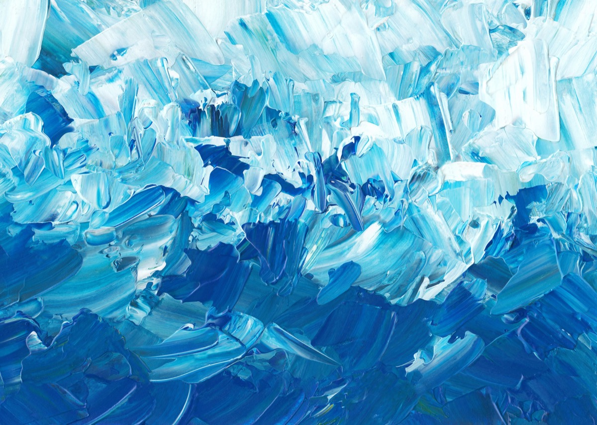

01MODEL-CENTRIC SCALING
01MODEL-CENTRIC SCALING
快手 UniFormer：从组件扩容到特征空间与任务空间统一扩容
分析工业推荐模型在特征空间、任务空间与服务效率上的统一扩展方法。
BEIHANG · SOFTWARE ENGINEERING · 2026
樱花树下站谁都美，我的爱给谁都热烈。
01MODEL-CENTRIC SCALING
分析工业推荐模型在特征空间、任务空间与服务效率上的统一扩展方法。

02讨论推荐系统从内容选择向个性化内容生成扩展的技术路径。
 03
03系统梳理召回、排序、序列建模与生成式推荐的核心方法。
从任务对齐、量化目标与生成接口三个层面分析 Semantic ID。
分析推荐模型的语义感知、推理机制及其训练目标。
当前暂无已公开发表的学术论文，已登记 2 项发明专利申请；成果页面将持续补充公开信息与研究材料。